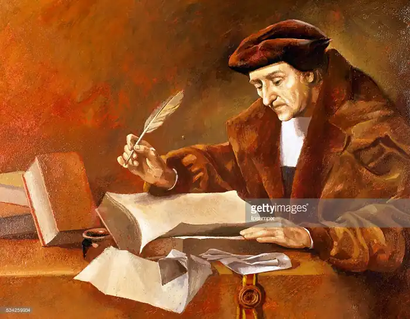
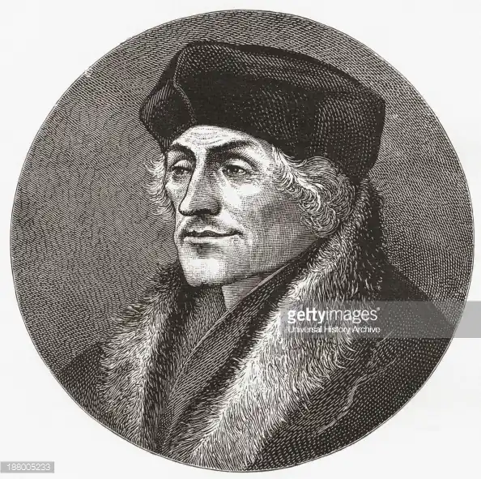
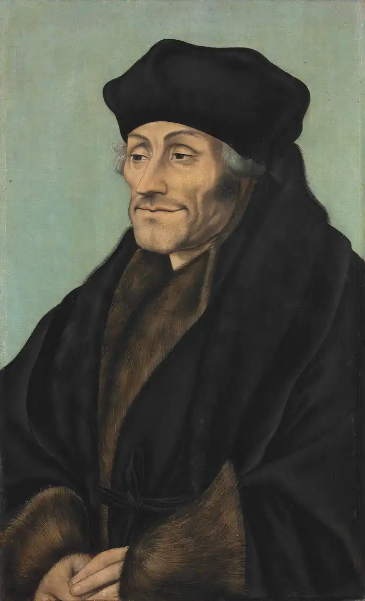

ЕРАЗМ РОТТЕРДАМСЬКИЙ (Erasmus Roterodamus; автонім: Гертсен Герт — 28.10.1466, Роттердам —12.07.1536, Базель) — нідерландський письменник і філософ-богослов.
Еразм Роттердамський виступав також як видавець стародавніх і сучасних літераторів, перекладач з давньогрецької мови на латину, автор праць з педагогіки. Усі свої твори Еразм Роттердамський писав латинською мовою, за винятком семи віршів, які написані давньогрецькою.
Еразм Роттердамський народився у ніч з 27 на 28 жовтня у місті Роттердамі. Рік народження точно не визначений. За різними джерелами: 1465, 1466, 1467, 1469. Він був позашлюбним сином доньки місцевого лікаря і молодого бюргера, котрий обрав кар'єру священика і тому не мав права одружуватися. Батька звали Ротґер Герард. Сина ж назвали Гергардом, що означало "бажаний", у перекладі грецькою — Еразмус, а латиною — Дезідеріус. У віці чотирьох років хлопчика віддали до школи у місті Гауда (Гуда), а ще через п'ять років Еразм Роттердамський опинився у Девентері, осередку послідовників "Нового благочестя" — нідерландського релігійного руху, що існував з XIV ст. і пропагував самовдосконалення на засадах містичного пізнання Христа і наслідування його вчинків у земному житті. Цей рух справив сильний вплив на молодого Еразм Роттердамського. Релігійна етика стала об'єктом його постійного інтересу. У 1485 р. померла мати Еразм Роттердамського, а через рік — батько. Залишившись без підтримки, Еразм Роттердамський 1488 р. подався в монастир Стейн поблизу міста Гауда, що належав ордену августинців, і незабаром постригся в ченці. Попервах монастирське життя дуже імпонувало Еразму Роттердамському, тому що у нього було вдосталь часу для самоосвіти. Августинці мали пристойну бібліотеку, крім того, Еразм Роттердамський міг провадити вчені бесіди з гуманістично налаштованими друзями. Це Серватій Ротґер із Роттердама, Вільям Герман та Корнелій, або Аурелій, Герард із Гауди. Вони стали адресатами листів і персонажами віршів Еразм Роттердамського, поділяючи його величезний інтерес до римської поезії, особливо до Верґілія, Горація, Овідія, Ювенала, Марціала, Клавдіана, Персія, Лукана, Тібулла і Проперція. У ліриці Еразм Роттердамський цінував тонке володіння метром, довершену поетичну мову і досконалість жанрових форм. Він писав вірші упродовж усього життя, подолавши шлях від учнівської версифікації до високої вченої та релігійної поезії. Відомі 136 його віршів, серед них: елегії, оди, епітафії, пеани, ямби. Тематика цих творів досить різноманітна — від пасторальної любовної пісні до високого релігійного славословлення. Стиль відповідав темі та жанру. Улюбленим метром Еразм Роттердамського був елегійний дистих, але загалом у своїх віршах він скористався 20 відомими класичними метрами. Будучи залюбленим у римську поезію, Еразм Роттердамський глибоко шанував чистоту латини, зіпсованої до того часу у повсякденній церковній практиці (обскурантська латина). Надалі боротьба за повернення латинській мові класичних форм стала одним із складників його філологічної, видавничої та педагогічної діяльності. З плином часу стіни монастиря Стейн стали для Еразм Роттердамського тісними. У 1493 р. йому випала нагода покинути кляштор. Герцог Бергенський, єпископ Камбрейської єпархії, готувався до відвідин Риму і шукав секретаря, котрий би бездоганно знав латину. Цю посаду запропонували Еразму Роттердамському, і, хоча поїздка до Риму не відбулася, влітку 1495 р. єпископ відпустив його у Париж навчатися теології. У Парижі Еразм Роттердамський наполегливо студіював богословську науку, але не обмежувався вивченням лише усталеного у пізній схоластиці переліку творів. Щоб розширити коло своєї лектури, він почав серйозно вивчати давньогрецьку мову. У червні 1500 р. Еразм Роттердамський повернувся у Париж, видав "Адагії", написав продовження цього збірника афоризмів, готував до видання "Примітки до Нового Заповіту" Лоренцо Валли і розпочав працю над перекладом Нового Заповіту з давньогрецької мови на латину. У 1501 р. Еразм Роттердамський готував до видання трактат Ціцерона "Про обов'язки", працював над книгою "Антиварвари", у якій виступає проти тих схоластів, які по-варварському відкидають античну спадщину, розвиває ідею наступності в історії культури, вважаючи новий час значною мірою залежним від попередніх епох, художні досягнення яких повинні стати матеріалом для творчого синтезу. Першим твором, який привернув до Еразм Роттердамського загальну увагу, став "Кинджал християнського воїна" ("Енхиридіон"), створений у Лувені протягом 1502—1504 pp. У цьому трактаті, який за стилем нагадує проповідь, Еразм Роттердамський викладає свої основні морально-філософські ідеї, спираючись головно на Біблію і твори отців та вчителів церкви: Орігена, Амвросія, Ієроніма, Августина та Діонісія Ареопаґіта. Автор тяжіє до раціоналістичної систематизації і просвітницького спрощення віровчення, намагається протиставити схоластичним доктринам доступну і зрозумілу "філософію Христа". У центрі твору перебуває людина, її душа, дух, розум, завдання пізнання самого себе і самовдосконалення, необхідність образності, свобода волі. Життя людини Еразм Роттердамський уявляє як постійну "війну" за власну доброчесність проти зла навколишнього світу та його спокус. У цій війні людина має два види зброї: чисту молитву і ґрунтовні знання. Еразм Роттердамський вважає, що розум слід формувати з ранньої юності шляхом вивчення античних поетів та філософів, і лише потім радить починати вивчення Біблії. Святе Письмо, за Еразмом Роттердамським, — текст символічний, що вимагає глибокого осмислення. Він наполягає на активності та безкомпромісності моралі, на спрямуванні її до внутрішньої чистоти людини. Слово "кинджал", ужите у назві книги, повинно символізувати духовну безкомпромісність людини у боротьбі за власну доброчесність. Християнський теологізм у цьому трактаті поєднується з неоплатонізмом (особливо в концепції душі), елементи античної риторики — з елементами схоластичної логіки, щирість тону — з ригоризмом. Окрім християнської літератури, Еразм Роттердамський широко цитує античні джерела. Суворий стиль наукового трактату урізноманітнюють елементи проповіді та послання. На всіх рівнях структури текст виступає віддзеркаленням переконань Еразм Роттердамського про наступність культури різних епох, їхній своєрідний діалог, у якому звеличуються високі помисли і відкидаються марнотні забобони, незалежно від їхнього (чи то поганського, а чи християнського) походження. У 1505—1506 pp. Еразм Роттердамський вдруге відвідав Англію, де він продовжив вивчення давньогрецької мови і старовинної християнської літератури. Звідси вирушив у Італію, супроводжуючи синів королівського лейб-медика Джованні Боеріо. На дозвіллі займався розширенням "Адагій". У 1509 р. помер англійський король Генріх VII, і лорд Маунтджой відкликав Еразм Роттердамського до Англії. На шляху до Лондона Еразм Роттердамський задумав створити пародійний енкомій "Похвала Глупоті" ("Morlae encomion") і написав його впродовж тижня, одразу ж після приїзду, у гостинній оселі Т. Мора. Цей твір був вперше опублікований у 1511 р. Похвальну промову (енкомій або панегірик) на власну честь виголошує алегорична постать пані Глупоти. Промова відповідає всім канонам риторики: містить вступ до теми, виклад суті питання, усіх способів його обґрунтування та короткий епілог. Традиції античної пародійної риторики (Ісократ, Лукіан) поєднуються з традиціями середньовічного пародійного диспуту і фольклорної "літератури про дурнів", образи якої у той час використовували німецькі письменники та публіцисти, серед котрих був і С. Брант (1457—1521), автор славетного "Корабля дурнів" (1494). Центральна частина авто-панегірика "Похвала Глупоті" за композицією нагадує середньовічне "зерцало", у якому зазвичай один за одним висвітлюються образи. С. Брант ("Корабель дурнів"), Ганс Гольбайн ("Танці смерті") також використовували прийомом "зерцала". От і пані Глупота у Еразм Роттердамського, досхочу насміявшись над людським всезнайством, перепускає перед своїми очима усіх представників суспільства. Тут і граматик, і ритор, і філософ, і богослов, і вельможі, і найвищі церковні владики тощо. Виникає парадоксальна ситуація: кожен із них, вважаючи себе мудрецем, насправді виявляється дурнем, уявляючи своє життя значним і важливим, насправді робить нікому не потрібні дурниці. Домінантою стилю стала іронія, яка дозволила блискуче показати розпливчастість уявлень про розум і глупоту, добро та зло, високе та нице, істотне та несуттєве. Не потрібно абсолютизувати ні людської мудрості, ні людської глупоти. Від людини багато приховано, і те, що вона вважає мудрістю, в іншій ситуації може виявитися дурістю, і навпаки. Глупота ж нерідко виступає у ролі блазня, який навмисно згущує барви заради сміху, а іноді буває вельми дотепним і дуже спостережливим, особливо ж тоді, коли йдеться про актуальні проблеми часу: про війну та мир, управління державою, церкву, науку, освіту. Що вище перебуває людина у суспільній ієрархії, то небезпечнішою стає її глупота, а коли вона прагне до зовнішнього блиску — слави, багатства, позірної доброчесності, поверхової вченості, — то й поготів. Парадокс невідповідності зовнішнього і внутрішнього в людині — одна з найдавніших тем у літературі. Це й алківіадів Силен у "Бенкеті" Платона, і одна з провідних проблем "Розради філософією" Боеція, і новозаповітний протест проти показної мудрості фарисеїв і книжників. Відтак "Похвала Глупоті" своєрідно синтезує античні та середньовічні традиції, переосмислюючи і по-новому актуально використовуючи їх — таким чином виникає новий жанр гуманістичної пародії, на ґрунті якого також постала плідна традиція. Уже в XVI ст. його наслідували чимало авторів, зокрема В. Піркгаймер, Ф. Меланхтон. Блискуча іронічна мова заклала підвалини філософської літературної мови, у залежності від якої зізнавалися Ф. Рабле, М. де Монтень та М. де Сервантес, а про самого Еразм Роттердамського згодом говорили як про "Вольтера XVI століття". У 1511—1514 рр. Еразм Роттердамський мешкав у Кембриджі, викладав грецьку мову і теологію, працював над перекладом листів Ієроніма та тексту Нового Заовіту.